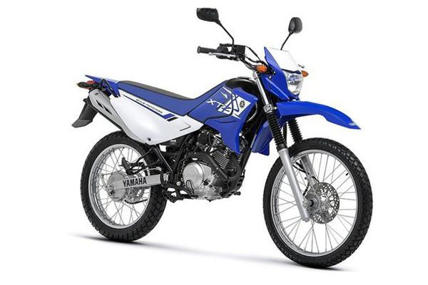

Yamaha XTZ 125

Sobre
A Yamaha XTZ 125 é uma motocicleta on/off-road de entrada, conhecida pela sua versatilidade, economia e resistência. Lançada no Brasil, a moto é bastante popular entre quem busca um modelo ágil para o dia a dia e capaz de enfrentar terrenos mais irregulares com facilidade
Características principais:
✅ Motor: Monocilíndrico, 4 tempos, 124cc, refrigerado a ar, com comando no cabeçote (SOHC) e alimentado por carburador (nas versões mais antigas) ou injeção eletrônica (em modelos mais novos).
✅ Potência: Aproximadamente 10 a 12 cv, dependendo da versão.
✅ Torque: Em torno de 1,0 kgf.m.
✅ Câmbio: 5 marchas, com engates macios e precisos.
✅ Suspensão: Dianteira telescópica de longo curso e traseira monoamortecida, garantindo um ótimo desempenho em estradas de terra.
✅ Freios: Variam conforme o modelo, podendo ser a tambor nas duas rodas ou disco na dianteira e tambor na traseira.
✅ Peso: Aproximadamente 118 kg (a seco), tornando-a leve e fácil de manobrar.
✅ Tanque: Em média, 11 litros, proporcionando uma boa autonomia.